Flotta Stellare - Shuttle |
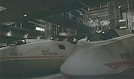Navette
a corto raggio in dotazione all'Enterprise
NX-01.
Capienza: un pilota e massimo 6 passeggeri.
Autonomia: riserva di aria respirabile di dieci giorni per due persone.
Velocità: 0,25 della velocità di impulso (Marauders).
| Pod 1 | Broken Bow, Fight or Flight, Breaking the Ice |
| Pod 2 | Strange New World |
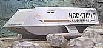In
servizio nella seconda metà del XXIII secolo. Lo scafo è in duranio e dispone di
un motorie a ioni (The Menagerie).
| Columbus NCC-1701-2 | The Galileo Seven | Cristoforo Colombo è il navigatore italiano che ha scoperto l'America. |
| Copernicus | The Galileo Seven | Nicolaus Copernicus (Niccolò Copernico) era un astronomo polacco che per primo intuì che fosse la Terra a girare attorno al Sole e non viceversa, come sosteneva Aristotele. |
| Galileo NCC-1701-7 Distrutta sulla superficie di Taurus II. | The Galileo Seven | Galileo Galilei (1564-1642) è stato un grande astronomo e fisico, inventore, tra l'altro, del cannocchiale. |
| Galileo II NCC-1701-7 | The Way to Eden | |
| [Senza Nome] | Let That Be Your Last Battlefield | |
| [Senza Nome] Proprietà di Zefram Cochrane. | Metamorphosis | |
| [Senza Nome] | The Menagerie |

| Copernicus #3 Danneggiata e abbandonata sulla superficie di Sha-Ka-Ree. | Star Trek V | Uno dei primi teorizzatori dell'eliocentrismo del sistema solare. |
| Galileo #5 | Star Trek V | Galileo Galilei (1564-1642) è stato un grande astronomo e fisico, inventore, tra l'altro, del cannocchiale. |
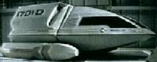Tipo:
Navetta leggera a corto raggio con propulsione warp.
Equipaggio: due piloti più sei passeggeri (standard).
Armamenti: nessuno (standard), due
phaser tipo IV (speciale).
| Campbell Distrutto durante l'atterraggio e abbandonato su una luna di Mab-Bu VI. | Power Play | Joseph W. Campbell è stato uno dei primi autori della fantascienza moderna. |
| Curie #3 Navetta dell'Enterprise utilizzata da Worf per partecipare al torneo di bat'leth su Forcas III nel 2370; dispersa all'interno del confine cardassiano nello stesso anno. | Parallels, Lower Decks | I coniugi Marie Sklodowska e Pierre Curie hanno studiato la radioattività e hanno scoperto il radio e il polonio. |
| Cousteau Shuttle della Aries. | Identity Crisis | Jacques Cousteau era un noto oceanografo del XX secolo scomparso nel 1997. |
| Fermi | Rascals | Enrico Fermi è uno degli scienziati che ha collaborato al Progetto Manhattan per la costruzione della prima bomba atomica. |
| Galileo Navetta con cui Yar trasporta Picard sull'Enterprise quando ha preso il comando della nave. | All Good Things... - Part I | Il nome è stato scelto in omaggio alla Galileo della Serie Classica. |
| Hawking | The Host | Stephen Hawking è un grande fisico teorico, che ha partecipato anche ad un episodio di The Next Generation. |
| Magellan #15 Distrutto in una sacca di non spazio. | The Outcast | Magellano è stato il primo navigatore a tentare la circumnavigazione della Terra. |
| Onizuka #7 | The Mind's Eye | Ellison Onizuka è uno degli astronauti morti nel disastro della missione 51-L del Challenger (OV-99) il 28.01.1986. |
| Sacajawea Intrappolato in una tempesta magnetica, è naufragato su un pianeta di una stella binaria del quadrante Delta. | Coda | Il nome deriva dalla donna Shoshone che ha guidato Lewis e Clark nella spedizione nel nordest. |
| [Senza Nome] #4. | The Next Phase | |
| [Senza Nome] #9. | The Price | |
| [Senza Nome] | The Next Phase | |
| [Senza Nome] | True Q | |
| [Senza Nome] RS-47 della stazione di comunicazione 47. | Aquiel | |
| [Senza Nome] Picard e Data recuperano un siluro fotonico sfuggito al controllo. | Genesis | |
| [Senza Nome] | Macrocosm | |
| [Senza Nome] | Fair Trade | |
| [Senza Nome] | Rise | |
| [Senza Nome] | The Raven | |
| [Senza Nome] Teletrasportato all'esterno della Voyager e rubato da Kes/Tieran; in seguito viene rintracciato e recuperato. | Warlord | |
| [Senza Nome] Viene usata da Paris e Kim per atterrare su un pianeta di classe Y. | Demon | |
| [Senza Nome] | Hope and Fear | |
| [Senza Nome] Naufragato su un pianeta durante una missione di ricognizione. | Gravity |
 Tipo:
Navetta media a corto raggio con propulsione warp.
Tipo:
Navetta media a corto raggio con propulsione warp.
Equipaggio: due piloti più sei passeggeri (standard).
Armamenti: nessuno (standard), due phaser tipo V (speciale).
| Famin | Chain of Command - Part I | Pierre Paul Famin (1855-1922) era un generale francese. |
| Feynman #5 | Chain of Command - Part I | Richard P. Feynman (1918-1988) è un fisico che nel 1965 ha vinto il
Premio Nobel per la teoria dell'elettrodinamica quantistica. Per un errore del gruppo dei modellisti, il nome all'esterno dello shuttle è Feyman. |
| Sakharov #1 Shuttle utilizzato dalla dottoressa Pulaski per condurre dei test medici su un bambino della stazione spaziale Darwin, sospettato di essere portatore di un virus genetico. | Samaritan Snare, Unnatural Selection | Andrei Sakharov (1921-1989) è stato un famoso scienziato dissidente russo. |
| [Senza Nome] #6 | Coming of Age | |
| [Senza Nome] #13 Precipitato su Vagra II e distrutto dall'Enterprise per impedire ad Armus di usarlo per abbandonare il pianeta. | Skin of Evil | |
| [Senza Nome] #10 Shuttle della Repulse. | The Child | |
| [Senza Nome] | Q Who? | |
| [Senza Nome] Distrutto dai Borg durante la missione per recuperare Picard/Locutus. | The Best of Both Worlds - Part II | |
| [Senza Nome] Distrutto nell'atmosfera di Tarchannen III. | Identity Crisis | |
| [Senza Nome] | The Host |
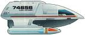Tipo:
Navetta media a corto raggio con propulsione warp.
Equipaggio: due piloti e sei passeggeri.
Velocità massima: curvatura 4.
Armamenti: due phaser di tipo V.
| Drake Perso da Kim in un'anomalia temporale. | Non Sequitur | L'Ammiraglio Sir Francis Drake ha comandato la prima nave britannica che ha circumnavigato la Terra. Drake prese anche possesso della California e di numerosi galeoni carichi di ricchezze. |
| [Senza Nome] | Parallax | |
| [Senza Nome] Distrutto in un atterraggio di emergenza. | Parturition |
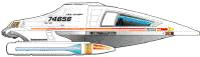Tipo:
Navetta pesante a medio raggio con propulsione warp.
Equipaggio: due piloti e due passeggeri.
Armamenti: due phaser tipo VI, armatura ablativa (Tsunkatse)
Velocità massima: warp 4 (Resolutions).
| Cochrane #4 Nel 2372 al comando di Tom Paris ha raggiunto Warp 10. | Threshold | Zefram Cochrane è stato l'inventore della propulsione a curvatura. |
| Cochrane Distrutto nel 2374 a causa di un cedimento strutturale nel tentativo di recuperare il nucleo a curvatura della Voyager. | Real Life, Day of Honor | |
| Dawkins Nel 2376 Reginald Barclay si reca sulla stazione Jupiter con questo shuttle. | Life Line | Richard Dawkins era uno zoologo inglese. |
| [Senza Nome] Paris e Torres indagano su una lettura intermittente dei sensori della Voyager. Lo shuttle viene abbordato e gli occupanti vengono neutralizzati. | The Swarm | |
| [Senza Nome] B'Elanna e Chakotay la usano per rapire Starling. Danneggiata, esegue un atterraggio di emergenza sulla Terra nel 1996. Viene riparata e recuperata. | Future's End - Part II | |
| 2 [Senza Nome] Entrambi distrutti: uno è stato disassemblato e l'altro è stato investito dall'esplosione della nave Borg, che lo tratteneva con il raggio traente. | Unity | |
| [Senza Nome] Affidato a Kes quando lascia la Voyager. | The Gift | |
| [Senza Nome] | Revulsion | |
| [Senza Nome] | The Raven | |
| [Senza Nome] Utilizzato da Chakotay, Neelix e Paris. | Mortal Coil | |
| [Senza Nome] Utilizzato da Tuvok e Sette di Nove per avvicinarsi alla stazione di trasmissione hirogena. | Hunters | |
| [Senza Nome] Paris modifica i motori di questa navetta con la tecnologia della curvatura coassiale utilizzando le conoscenze di Steth. | Vis à Vis | |
| 2 [Senza Nome] Vengono ceduti ad un gruppo di Brenari in fuga dai Devore attraverso un tunnel spaziale. | Counterpoint |
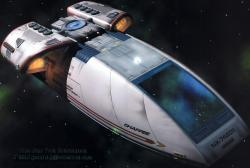Queste
navette sono progettate per un equipaggio di quattro elementi, sono basate sul
telaio del Tipo 6 e sono equipaggiate con una versione in
scala dei normali sistemi ad impulso e di curvatura presenti sulle navi
stellari.
I sistemi difensivi comprendono phaser, tubi di lancio per micro-siluri, scudi e
dispositivi di interferenza elettronica di segnali e trasmissioni.
| Chaffee Navetta ausiliaria della Defiant. | The Sound of Her Voice | Roger Chaffee è uno degli astronauti dell'Apollo I. La navetta è stata disegnata da Doug Drexler. |
| [Senza Nome] Utilizzato per fare attraversare il wormhole da alcuni frammenti di cometa, inglobandoli in un campo di curvatura per limitare i danni. | Destiny |
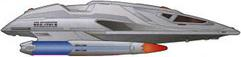Tipo:
navetta pesante a lungo raggio con propulsione warp.
Equipaggio: Quattro piloti e sei passeggeri.
Velocità massima: warp 6.
Armamenti: Quattro phaser di tipo V, due micro-lanciasiluri (prua e
poppa).
| [Senza Nome] Shuttle dell'Enterprise. |
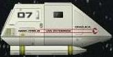Tipo:
Navetta biposto leggera a corto raggio dotata di sola propulsione ad impulso.
Capienza: due persone (pilota e operatore).
Armamenti: due emettitori
phaser tipo IV.
| El-Baz #5 | Time Squared, Transfigurations, Descent - Part I | Disegnato da Rick Sternbach e
Richard McKenzie, miniatura costruita da Tony Meininger. L'El-Baz è
il primo shuttle di questo tipo che si è visto, altri shuttlepods sono delle
modifiche di questo modello. Farouk El-Baz è un ex geologo planetario della NASA, ora insegna alla Brown University ed ha lavorato assieme a Rick Berman ad un documentario. |
| Goddard #2 Ceduto al Capitano Montgomery Scott. | Relics | Robert Goddard (1882-1945) era un ingegnere e fisico americano, autore di lavori sulla cristallizzazione e sui gas rarefatti. |
| Justman #3 Prima navetta dotata di uno scudo metafasico. | Ship in a Bottle, Suspicions, Gambit - Part II | Robert H. Justman è stato produttore esecutivo della Serie Classica e di The Next Generation. |
| Onizuka #5 | The Ensigns of Command | Ellison Onizuka è uno degli astronauti morti nel disastro della missione 51-L del Challenger (OV-99) il 28.01.1986. |
| Pike #12 Distrutto. | The Most Toys | Christopher Pike è stato un capitano dell'Enterprise. |
| Voltaire #3 | In Theory | Voltaire è stato uno scrittore e filosofo francese del XVIII secolo. |
Navetta dall'aspetto simile ad uno shuttle di Tipo 9, ma dalle dimensioni più ridotte.
| [Senza Nome] Citato quando Janeway dice di volerne prendere una per abbandonare la Voyager e mettere in pratica il suo piano di fare saltare il tunnel spaziale sacrificando se stessa. | Drone |
| [Senza nome] Navetta pilotata a distanza assimilata dai Borg. | Dark Frontier - Part I |
| 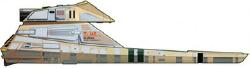Surak Dotato di propulsori warp. | Star Trek I | Surak è stato il più grande filosofo vulcaniano. |
| 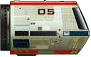[Senza Nome] #5 Navetta trasporto. | Star Trek II | |
| [Senza Nome] #5 Navetta trasporto. | Star Trek IV | |
| [Senza Nome] Navetta trasporto, call sign SD103. | Star Trek VI | |
| 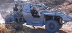Argo In dotazione all'Enterprise, può essere equipaggiata con una jeep da ricognizione terrestre. | Nemesis | |
| 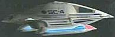SC-4 Shuttle dell'ammiraglio Janeway in una timeline alternativa con cui raggiunge la Voyager del passato nel quadrante Delta. È dotato di armatura ablativa e di dispositivo di occultamento; è armato con siluri transfasici. | Endgame - Part I |